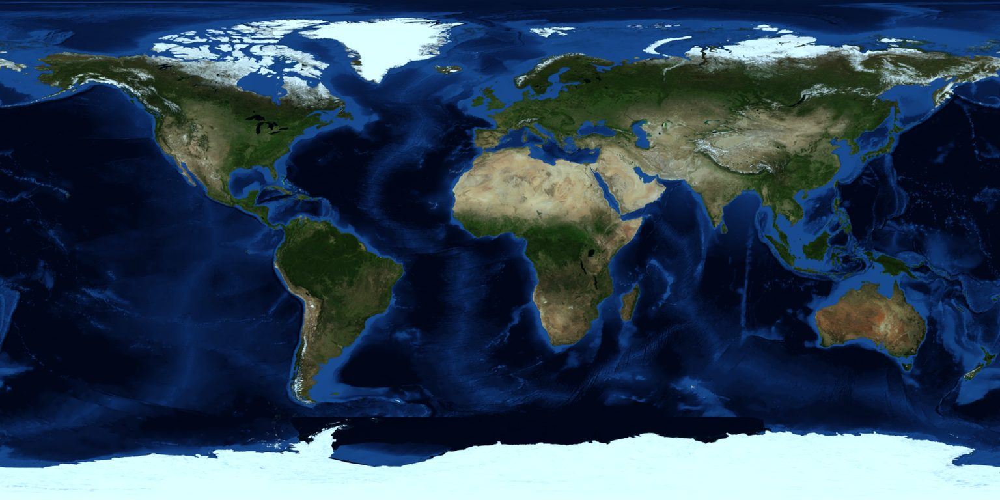
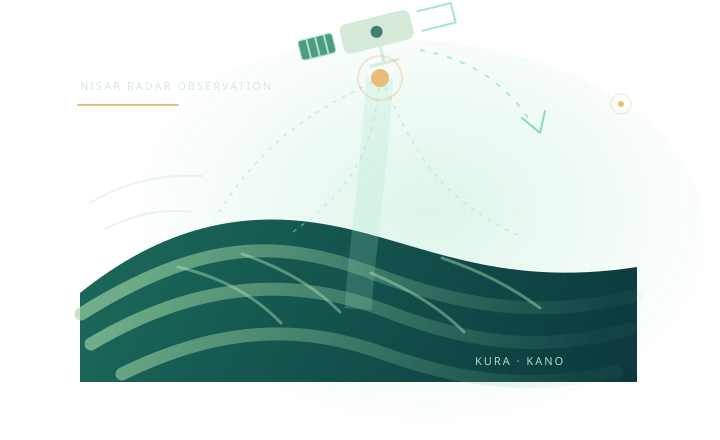
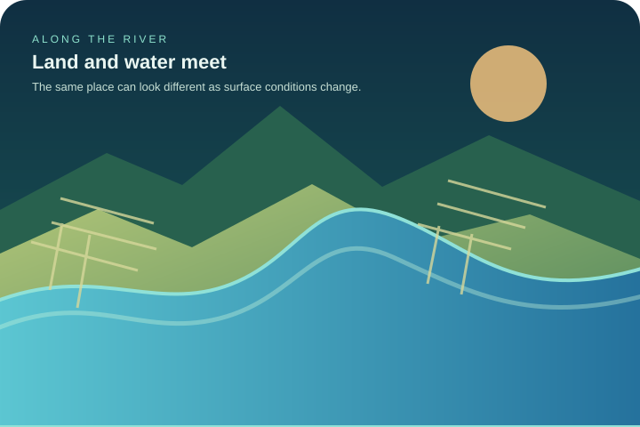
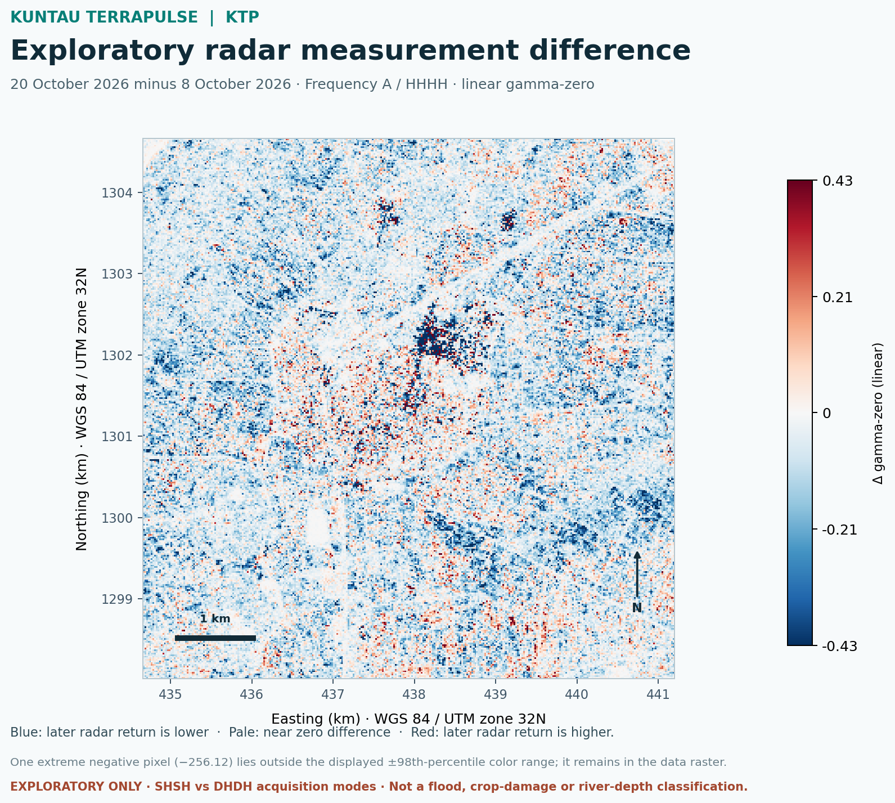
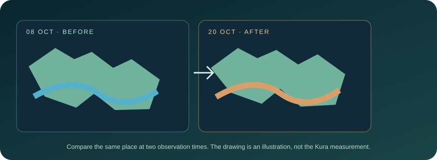
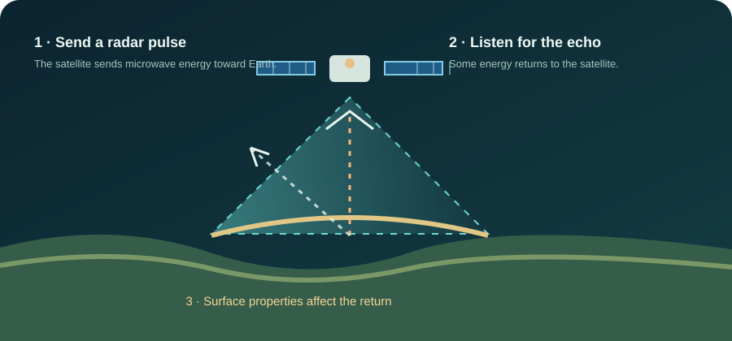
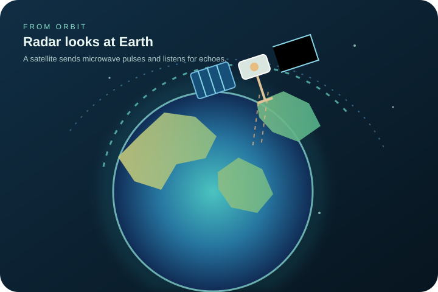

01 · FROM ORBIT
Observe a changing Earth
Radar sensors record surface responses through day and night.
Explore Earth in three dimensions, inspect satellite radar observations, and compare how landscapes respond over time. Clear visuals bring scientific measurements, maps and practical context together in one connected workspace.


Radar sensors record surface responses through day and night.

Bring geographic layers and place-based knowledge into the same view.

Compare two dates, explore the difference and check the limitations.
Move from a global perspective to the details of a place. Explore radar layers, compare observation dates, and connect scientific measurements with clear explanations and practical context.
The 8 October and 20 October radar previews are included in this release. The original GeoTIFFs can be selected locally when a fresh calculation is required.
Radar backscatter can respond to water, wet soil, vegetation, surface roughness and acquisition conditions. A change alone does not prove flooding.
The October products are SHSH and DHDH. This difference must be considered when assessing comparability.
Explore the Kura test footprint and switch between the 8 October, 20 October and difference layers. Each layer represents a radar measurement—not an ordinary photograph.
The first preview shows the radar measurement recorded on 8 October. The second shows the measurement recorded on 20 October. The change view subtracts the earlier measurement from the later one. It highlights where the radar response differs; it does not automatically identify water, flooding or crop damage. The acquisition modes differ, so scientific comparability still needs review.
The included radar previews are ready to inspect. Load the original GeoTIFFs below only when you need a fresh on-device calculation.
Use the same test area and shared HHHH measurement to inspect the pair. The different acquisition modes and open QA checks mean the result remains exploratory.
The 8 October product is SHSH and the 20 October product is DHDH. Both use the shared Frequency-A HHHH measurement in this extraction, but both QA summaries report an identification-group check failure. Treat the difference layer as exploratory, not as a flood or crop diagnosis.
KUNTAU TERRAPULSE includes the 8 October, 20 October and exploratory change previews. They can be viewed without downloading or selecting the original GeoTIFFs. The raw GeoTIFF selectors below are for local recalculation only.
The 8 October, 20 October and exploratory difference previews are included with KUNTAU TERRAPULSE. Select the original GeoTIFFs below to recalculate from source pixels.
A radar measurement can reveal surface change. It cannot, by itself, measure river depth, flow rate or water level.
The satellite measured a difference in radar return between two dates. The colours show where the measurement was higher or lower later. They do not tell us the cause. A local check is needed.
Choose the earlier or later satellite observation.
See where the radar measurement changed.
Ask a local person to verify what happened on the ground.
Packaged analysis is available. It describes radar-measurement differences only; scientific QA and product comparability review remain open.
Each bar represents the share of common valid pixels whose later HHHH radar measurement was lower or higher than the earlier measurement.
How to read this: a lower later radar return means the measured HHHH value was smaller in the 20 October scene for that pixel; a higher return means it was larger. Water, wet soil, vegetation, surface roughness and acquisition conditions can all affect the signal. These bars do not classify floodwater, crop damage or soil moisture.
Exploratory only. The 8 October scene is SHSH and the 20 October scene is DHDH. Both QA summaries report an identification-group check failure. A full cross-mode comparability review and field verification are still required.
These two radar observations alone cannot confirm flood occurrence, water depth, river level, crop health or crop damage. Both product QA summaries have an outstanding identification-group failure, and the test footprint has not been verified against the river channel.
GCOV provides calibrated, terrain-corrected radar covariance measurements. The values respond to surface and structural properties, moisture, geometry and other factors.
NISAR GCOV guide ↗Changes can be associated with open water, wet soil, floodplain vegetation, roughness or acquisition conditions. Independent evidence is needed to distinguish them.
Do not infer river depth, flow speed, water level or future flood risk from this two-date radar comparison alone.
For stronger interpretation, combine radar with river-gauge readings, rainfall records, flood reports, field photographs and community observations.
A friendly guide for anyone exploring Earth observation—from first-time learners to researchers and geospatial teams. No GIS experience required.
TERRAPULSE compares radar measurements from two dates over a test area near Kura. A highlighted place is a place worth asking about. It is not automatic proof of a flood, crop damage or danger.

A map of how strongly radar energy returned from the ground at the time of each satellite pass.
Water, wet soil, plants, rough ground, farming activity and the way the satellite looked at the area can all affect the signal.
Use the highlighted area as a prompt to ask local people and check the ground. Do not make a safety or farming decision from colour alone.
Record what people actually observed, when it happened and where. Only share photographs or personal details with permission.
Invisible microwave energy sent from a satellite and measured when some returns.
The radar signal that comes back from the ground.
One small square in a digital map, representing a measured area.
Going to the place, or asking trusted local observers, to see what happened.
NISAR sends microwave energy toward Earth and measures the energy that comes back. Different surfaces send back different echoes. Scientists study those echoes to learn about changes on Earth.

The satellite sends a radar pulse toward the ground.
Some of the energy bounces back. The sensor measures the return.
Scientists compare measurements from different dates and investigate the reasons for change.
1. Is a radar image the same as a normal phone photograph?
2. Does a red or blue change colour prove that a flood happened?
3. What helps explain a radar change?
The current pair is an exploratory comparison of the shared HH power layer. It is not approved as a quantitative change product while cross-mode and QA issues remain unresolved.
NISAR_L2_PR_GCOV_032_123_D_083_2005_SHSH_A_20261008T175433_20261008T175508_P05023_N_F_J_001Download QA report ↗NISAR_L2_PR_GCOV_033_123_D_083_2005_DHDH_A_20261020T175433_20261020T175508_P05023_N_F_J_001Download QA report ↗The pair differs in acquisition mode (SHSH versus DHDH), and both QA summaries show an identification-group check failure. The common HHHH layer is a useful starting point, not proof that the pair is fully comparable. Inspect detailed QA and acquisition metadata before interpreting the difference scientifically.
A lightweight guided walkthrough for a classroom, farmer meeting or project demonstration. No video download required; use your device's screen recorder if you want to make a video.
The two ASF catalogue records, analysis summary and QA evidence are bundled with this version. You can inspect or download them here.
The supplied QA summary CSVs report that the identification-group check failed for both dates. Other listed checks passed. The summary does not identify the exact diagnostic cause, so do not describe either product as fully QA-approved.
The other listed checks in the consolidated summaries passed, including input opening, coordinate-grid metadata, calibration information, data-validity checks and QA completion without exceptions. The CSV summary alone does not show the exact cause of the identification-group failure.
The release includes the original ASF catalogue metadata, product QA reports, ISO metadata, analysis records, visual previews and a separate archive of the available derived raster outputs.
The original HDF5 products (about 1.49 GB and 1.90 GB) and original before/after Float32 GeoTIFF inputs were not present in the saved uploads. The TIFFs in the evidence ZIP are display-only or exploratory derivatives. The source-data guide explains how to retrieve the HDF5 products from ASF with Earthdata Login and create matched Float32 GeoTIFF inputs locally.
Choose a primary display mode, explore the colour collections and tune the 3D Earth viewer for the device.
The primary mode controls the complete workspace. The selected mode is saved locally in this browser.
Colour collections change the workspace accents while keeping the selected light or dark mode.
The home-screen app opens the secure website address saved when it was installed. For a phone installation, use the public HTTPS Cloudflare Pages address—not a Windows-only local preview such as 127.0.0.1 or localhost.
Checking current address…This is an installable Progressive Web App (PWA), not an Android APK. The HTML, CSS and JavaScript are application files; the installed experience displays the finished interface.
Open the full Android installation guide ↗The selected GeoTIFF files are read inside the browser for local analysis. They are not automatically uploaded to an application server. The current in-memory raster session clears when the page is refreshed, so original research files should remain safely stored outside the public repository.
Replay the five welcome screens that explain the mission, the study area and the comparison workflow.
KUNTAU TERRAPULSE is designed and developed by the Quentausas Corp product and research team for NASA Space Apps Challenge 2026, in collaboration with KUNTAU Science Academy. The team combines Earth-observation research, geospatial analysis, interface engineering and public science communication.
Earth texture: compact Blue Marble-style visual reference. NASA/Goddard Space Flight Center · Blue Marble Next Generation. This texture is illustrative, not a Kura observation.
3D globe: interactive Three.js sphere with a bundled Earth texture, local study-area marker and animated satellite illustration. The orbit is conceptual, not live NISAR telemetry or an exact engineering model.
Learning diagrams: original KUNTAU TERRAPULSE learning diagrams. Scientific observations are shown separately in the georeferenced NISAR comparison workspace.
KUNTAU TERRAPULSE is the Earth intelligence product from Quentausas Corp, developed in collaboration with KUNTAU Science Academy for NASA Space Apps Challenge 2026 — “Dancing with the SARs”. Explore interactive Earth views, satellite radar layers and evidence-led comparisons in one connected workspace. Radar measurements can inform investigation, but they do not independently predict floods or measure river levels.
Observation previews are exploratory visualizations. They should not be interpreted as validated flood maps or water-extent assessments.
A guided introduction to Earth observation and radar.

Guided presentation · no external video or data download. The walkthrough can be recorded with the device screen recorder.
Explore the Earth, compare radar observations and understand what a satellite measurement can—and cannot—tell us.